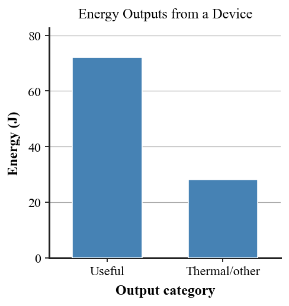
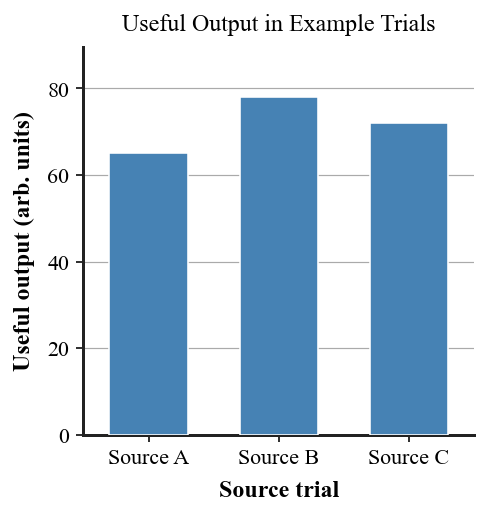

Practice focus: Evaluate energy sources, carriers, transformations, efficiency ideas, useful outputs, thermal transfers, and impossible free-energy claims.
Define energy source in the context of a real energy system.
Define energy carrier in your own words.
What is an energy transformation?
Name one common less-useful energy transfer in real devices.
Classify hydrogen stored in a tank as an energy source, carrier/storage medium, or thermal loss.
Classify electricity moving through wires as an energy carrier or an energy source.
Classify warming wires in a device as useful output or energy transferred to the surroundings.
State whether a solar panel creates energy from nothing.
State whether a machine can produce more energy than the total energy supplied to it.
Name two criteria besides efficiency that can be used to compare energy sources.
Use the useful/thermal output graph to identify which output is larger in the example device.

Use the source-output graph to identify which example source produced the greatest useful output in the supplied trial data.

Trace the energy chain shown for the battery system. Identify the initial form/source, an intermediate carrier or transformation, the useful output, and one transfer to the surroundings.
A device receives 100 J of energy and delivers 72 J as useful output. Without using a new efficiency formula, determine how much energy is transferred to other forms or surroundings.
A power system delivers 450 J useful electrical output while 150 J becomes thermal/sound energy. Determine the total energy accounted for and explain why this supports conservation.
Compare two devices with the same energy input: Device A gives 80 J useful output and 20 J thermal output; Device B gives 60 J useful output and 40 J thermal output. Identify which makes a larger fraction of the input useful and explain without introducing a new required formula.
| Device | Useful output | Thermal output |
|---|---|---|
| A | 80 J | 20 J |
| B | 60 J | 40 J |
Use the useful/thermal bar graph to explain why “less useful” energy is not the same as destroyed energy.
Use the source-output bar graph to compare three fictional trial outputs. State what additional evidence would be needed before declaring one source “best.”
A battery-powered flashlight changes stored chemical energy into electrical energy, light, and thermal energy. Classify each step as storage, carrier, useful output, or transfer to surroundings.
A hydroelectric system starts with water stored high behind a dam. Trace gravitational PE through motion and generator output, including one loss pathway.
A wind turbine produces electricity but also sound and heat. Explain why the sound/heat do not violate conservation of energy.
A hydrogen vehicle is called “zero-emission.” Identify why the production method must be considered before making a full energy/environment claim.
An advertisement claims a motor has “200% energy efficiency.” Identify what measurements of energy input and output would be needed to test the claim.
A regenerative braking system transfers some vehicle kinetic energy into stored electrical/chemical energy instead of only thermal energy. Explain why this is an energy transformation, not energy creation.
Hydrogen is advertised as a perfectly clean energy source. Critique the claim by distinguishing carrier from source and explaining why production method matters.
A solar-panel advertisement says the panel creates electrical energy from nothing. Correct the claim using input energy, transformation, output, and conservation.
A motor produces useful motion but also becomes warm. Explain why the thermal transfer affects usefulness while total energy remains conserved.
Compare two energy sources using availability, reliability, environmental impact, and useful output. Explain why one data category alone is not enough for a strong decision.
Audit a real energy chain from source to useful output. Identify the source, carrier(s), transformations, useful output, transfers to surroundings, and at least two decision criteria for judging the system.
A self-powered machine claims it can run forever while also powering a lamp. Critique the claim using conservation of energy, identify likely hidden inputs or losses, and propose measurements that could test the device fairly.